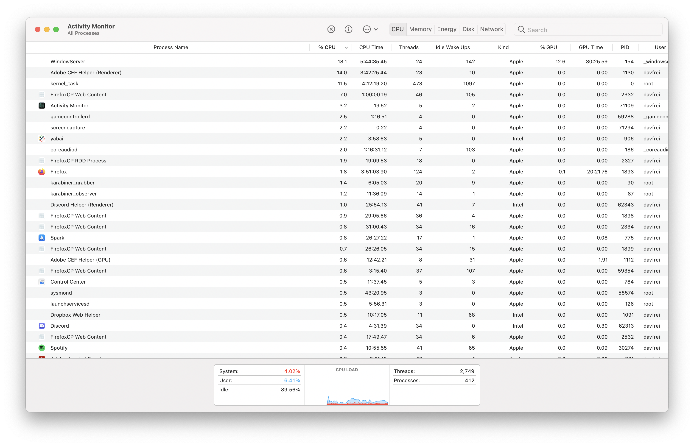
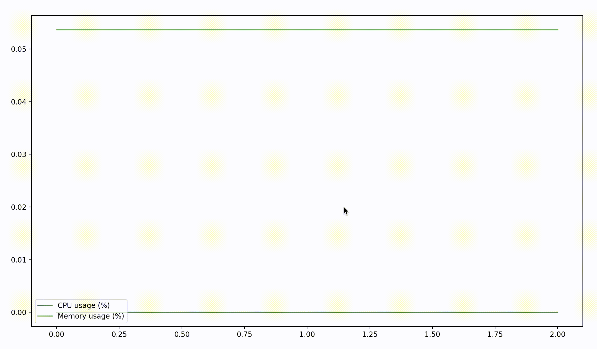
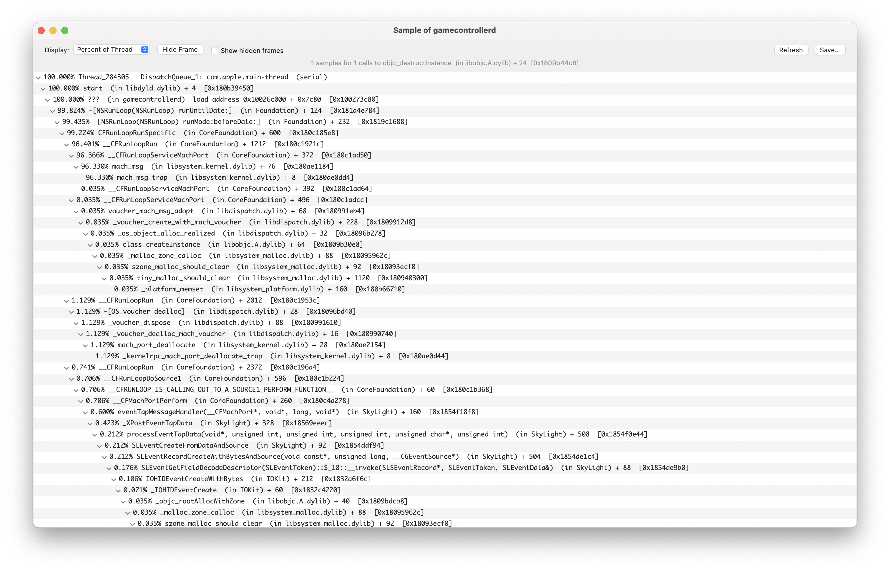
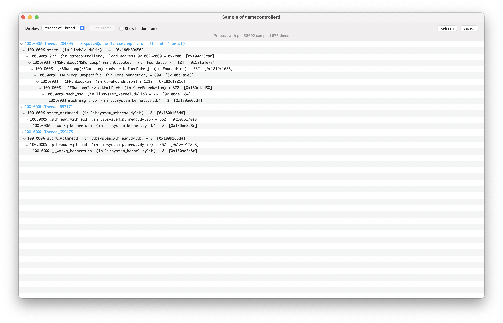
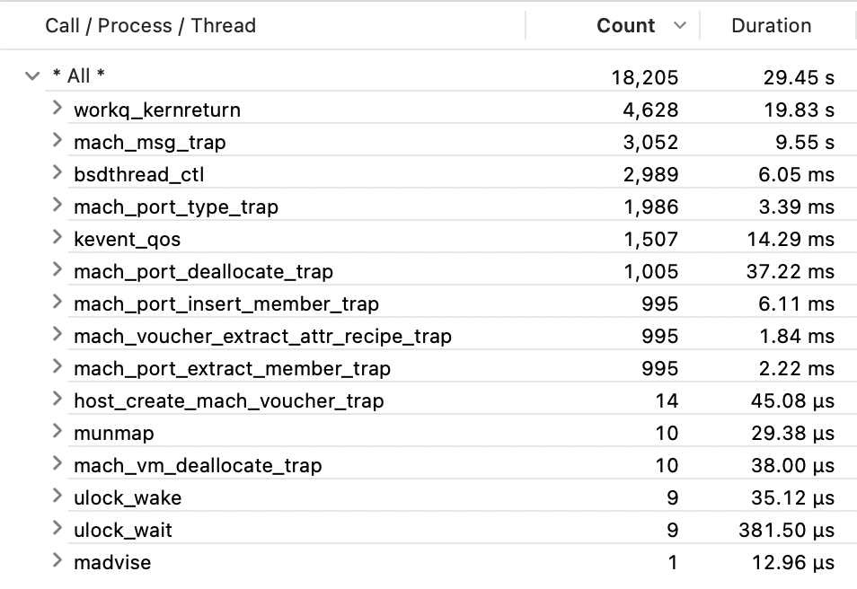
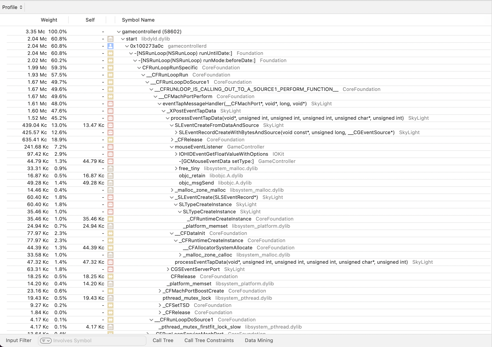
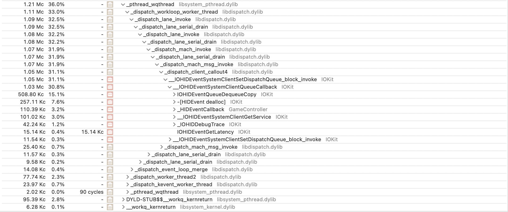
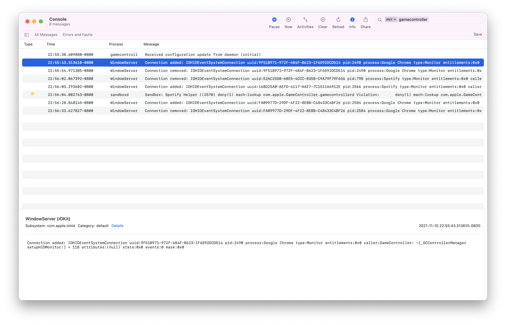

Investigating OSX Daemons
Part 1: Some Suspicious Processes
It's a slow day on the machine, but just for the fun of it, let's idly open up Activity Monitor to alleviate some boredom.

Looks normal. Just some userspace application like Spotify or Firefox, some system processes like kernel_task or coreaudiod, and… wait.
What's this about? I certainly don't have a game controller plugged in, and this process is taking up a nontrivial amount of my CPU (2.5%)! What does this daemon even do? Some quick google searches reveal the scattered cries of other panicked OSX users over the years with similarly high CPU usages, only to be informed that it is a system process that should be left alone. Maybe the man page will offer some insight.
$ man gamecontrollerd No manual entry for gamecontrollerd
No luck. Well, we can try to track it's behavior more carefully. Let's write a quick Python script called monitor.py that uses psutils and matplotlib to plot a process' CPU and memory usage over time.
import time import psutil import sys import matplotlib.pyplot as plt from matplotlib.animation import FuncAnimation p = psutil.Process(int(sys.argv[1])) fig, ax = plt.subplots() cpu, memory = [], [] def update(frame): cpu.append(p.cpu_percent()) memory.append(p.memory_percent()) ax.clear() plt.plot(cpu, label="CPU usage (%)", color="#537b42") plt.plot(memory, label="Memory usage (%)", color="#6cad50") plt.legend(loc="lower left") return plt.plot(cpu) ani = FuncAnimation(fig, update, blit=True) plt.show()
We'll need to gather some quick information about the process in order to monitor it. We can do this by using ps, the UNIX process status utility, and grep, everyone's favorite searching tool.
$ ps aux | grep -E "(PID|gamecontrollerd)" | grep -v grep USER PID %CPU %MEM VSZ RSS TT STAT STARTED TIME COMMAND _gamecontrollerd 59288 0.2 0.1 408528848 8688 ?? Ss 1:24PM 1:24.68 /usr/libexec/gamecontrollerd
Excellent - we now know the PID is 59288, and we even know the location of the binary! Also huh, it's using less CPU all of a sudden now, and that prompts another question that we can answer with our improved monitoring script: when exactly does it spike in CPU usage?
What was that command you ran?
ps lists the statuses of processes. The 'aux' argument is actually a compressed way of enabling three flags:
-alists other user's processes. This is important because this process is actually owned by the_gamecontrollerduser.-uused to list expanded information like user, pid, memory, etc. which are what we need. Apparently this is now deprecated, but it still works in compressed format like it used to. I mostly format it this way out of habit.-xlists processes not attached to a terminal, which is important because this is a daemon that was not started by a terminal.
grep searches for patterns in files (or in information piped into it). The -E flag enables "extended regular expression" mode which allows us to more easily search for one keyword or another via the "(PID|gamecontrollerd)" argument. It specifies that grep should search for any line that has PID or gamecontrollerd in it, leaving us with both the column titles and the process for the information.
Finally, we call grep once more, since the previous grep call will actually show up in the process list. -v makes grep search for the anything but the keyword (which is grep itself in this case), filtering out our search from the process list.
Wait. Why is that PID so high? And it started at 1:24 PM? That looks fishy...
This is unfortunately an inconsistency caused by me messing with the process a bit too much during the experimentation process for this writeup. I believe I actually killed the process at one point to see if it would have an impact (this was not an amazing idea - do not try at home!).
$ sudo python3 monitor.py 59288

That's… rather boring. Maybe if we pass the time for a little bit it'll show something interesting?

Wow! There's the suspicious behavior we're looking for! For what possible reason could it be using the CPU whenever there's some significant mouse movement?
Part 2: What's Actually Happening Here?
What's this process actually doing? Let's use a couple tools to get an idea: first off, we can try and use lsof (a shell utility that lists all open files as well as what's opening them) to see if it has any files open.
$ lsof | grep gamecontrollerd
Nope. Nothing. Well, let's track what system calls it's making.
What's a system call?
Processes request the operating system to do things via system calls. There are system calls for opening up files, terminating processes, allocating memory, and more. To actually perform the task requested by the system call ("syscall" for short), the computer switches over to the operating system's core (the "kernel") and then back to the user process.
How exactly do we do that on OSX again? A quick google search yields that dtruss is the tool to use, and quickly viewing the manual of dtruss with man dtruss shows the following at the top:
dtruss(1m) USER COMMANDS dtruss(1m)
NAME
dtruss - process syscall details. Uses DTrace.
SYNOPSIS
dtruss [-acdeflhoLs] [-t syscall] { -p PID | -n name | command }
DESCRIPTION
dtruss prints details on process system calls. It is like a DTrace version of
truss, and has been designed to be less intrusive than truss.
sudo dtruss -p 59288 looks like about the right thing to try.
$ sudo dtruss -p 59288 ^C^C
Not pictured: my computer freezing and requiring a reboot.
Perhaps this isn't the best place to start. We can instead direct our attention to what functions it's calling, and Activity Monitor has a convienient button that lets you sample a process and get a visualization of the "call stack" in the form of a sort of tree where the nodes are functions and the children of those nodes are functions those functions called (except this is displayed via nested dropdowns and not an actual tree).
How does Activity Monitor do that?
Activity Monitor in this case is an example of a sampling profiler. Sampling profilers get an idea of how long much time is spent calling a function in a process by regularly pausing the process (via the signal SIGSTOP), getting its current call stack (which would be the current function and all its parents), and resuming the process (via the signal SIGCONT). While it does this, it counts how many times it sees a given function in the call stack. If it sees it more times, the function is running for longer.
It can then aggregate all the call stacks it ever saw to visualize what functions the process ran and can also display the number of times it saw a function on the call stack (or that number divided by the total number of pauses to get a percentage) to visualize how much time was spent executing it.

That's a lot of information (and that's only part of the results for one thread) - but let's focus on the functions that are taking up the most time:
mach_msgtakes up 96.33% of the time in the main thread. It's documented in some old XNU manual page as being used for sending "Mach messages" which can include "port rights and adreesses of large regions of memory".__workq_kernreturntakes up near 100% of multiple threads. Unfortunately, this function (system call?) is completely undocumented. According to a random stackoverflow comment, they are "GCD dispatch worker threads that are waiting for work", so we can likely ignore them for now.- One specific thread has a reasonable looking divide, with functions like
__IOHIDEventSystemClientQueueCallback,__IOHIDEventCreateWithBytes, and+[_GCControllerManager sharedInstance]taking up chunks of time. Perhaps this is the thread that's actually doing something important.
We could validate our guess by sampling the process again when we're not moving the mouse and seeing what we get:

Yup. mach_msg and __workq_kernreturn are still there, but not the other thread. On the subject of those two, let's try and check again what other system calls the process is making - but properly this time. Hidden away in /usr/bin are a variety of DTrace scripts that allow us to get the job done in a bit of an easier way. In particular /usr/bin/syscallbypid.d dumps out all syscalls and the PIDs of the processes calling them.
$ /usr/bin/syscallbypid.d PID CMD SYSCALL COUNT # not pictured: many, many, many other syscalls 58602 gamecontrollerd __disable_threadsignal 1 58602 gamecontrollerd bsdthread_terminate 1 58602 gamecontrollerd thread_selfid 1 58602 gamecontrollerd madvise 5 58602 gamecontrollerd ulock_wait 13 58602 gamecontrollerd ulock_wake 13 58602 gamecontrollerd kevent_qos 3140 58602 gamecontrollerd bsdthread_ctl 6336 58602 gamecontrollerd workq_kernreturn 9694
Wow, that's a lot of workq_kernreturn. But wait - where is mach_msg? We already know that's a syscall… right? Maybe it uses a different interface than the other system calls? Something tells me this isn't the full picture.
Let's bust out Instruments, OSX's official profiler for monitoring procceses. Hopefully that will have all the convieniences we need to make things more readable.

mach_msg is back, alongside some entirely new calls, but things still aren't very clear. However, the CPU profiling that Instruments does (essentially a cleaner version of Activity Monitor's earlier sampling) may shed more light:

Aha! Those calls to mouseEventListener and -[GCMouseEventData setType:] are our first concrete evidence that gamecontrollerd is monitoring the mouse. Furthermore, lots of time is spent in SLEventCreateFromDataAndSource, and other miscellaneous functions from "SkyLight". SkyLight seems to be associated with the OSX WindowServer process, according to this random blog post that happens to be the one website on the internet acknowledging its existence. That seems reasonable - maybe this daemon is for reporting mouse events to windows (and is just weirdly named).

Another thread seems to be making a lot of calls to IOKit's HID-related functions, and since HID stands for "human interface device" and mouses/trackpads are a type of HID, this seems reasonable. Also, the _HIDEventCallback and the (not pictured) -[_GCHIDEventSubject publishHIDEvent:] calls made by the daemon itself also seem like they're part of the mouse monitoring process. However, these calls and the mouseEventListener are the only functions directly called by the daemon, so there's no interesting computation happening on its side, and how it's communicating this information is still unclear. Perhaps the continous mach_msg thread is reporting it?
Finally, let's take a look at OSX's system logs via the Console app. Instruments didn't report any logging, but over a longer time period there happens to be more activity, with logs ranging from debug messages from gamecontrollerd to reports from WindowServer.

The WindowServer logs concerning some apps connecting and disconnecting from GameController-related functions matches what we saw in the profiler output well. SkyLight implied it was associated with WindowServer somehow, and here it is! Some apps seem to be requesting monitor information from the daemon via -[_GCControllerManager setupHIDMonitor:], which is odd since until now the daemon appeared to be concerned with mouse events only. This also legitimizes the process a lot - at first it looked kind of spooky because of the strange name, high CPU usage, and mouse monitoring, but these requests from normal applications highlight how it's clearly a normal part of the ecosystem.
Part 3: Peeking at the Binary
The next best way to find out more is to hop right into the binary and poke around with a reverse engineering tool like Hopper, which will be most useful to us through its ability to locate symbols (function names, strings, etc.) within a binary, disassemble (get assembly code from binary), and decompile (get pseudocode from binary). If we remember from one of our ps aux calls way back, we know the binary is located at /usr/libexec/gamecontrollerd.
Right off the bat, the functionreferenced in the console logs, -[_GCControllerManager setupHIDMonitor:], is not anywhere within the binary, and any reference to GCControllerManager is external. One such reference (annotated by Hopper) is
000000010001c078 extern function code ; in /System/Library/Frameworks/GameController.framework/Versions/A/GameController, DATA XREF=-[GCDaemon acceptNewConnection:fromGCEnabledApp:]+144, objc_cls_ref__GCAppClientProxy _OBJC_CLASS_$__GCControllerManagerServer:
Unfortunately, no references to the function are anywhere in this framework's directory either. Dead end, although the directory is filled with game-related things like XboxHapticCapabilityGraph.json, which implies that at least this does truly live up to its name and is solely for game controllers.
Paging a bit more through the binary yields symbols like -[GCDGameControllerDelegate listener:shouldAcceptNewConnections] provides extra evidence of this process listening to mouse events, yet the absence of the word "mouse" in symbols and the presence of symbols like -[GCDGameControllerDelegate addController:forward:] really do imply this daemon is just for video game controller.
At this point, the trail runs cold.